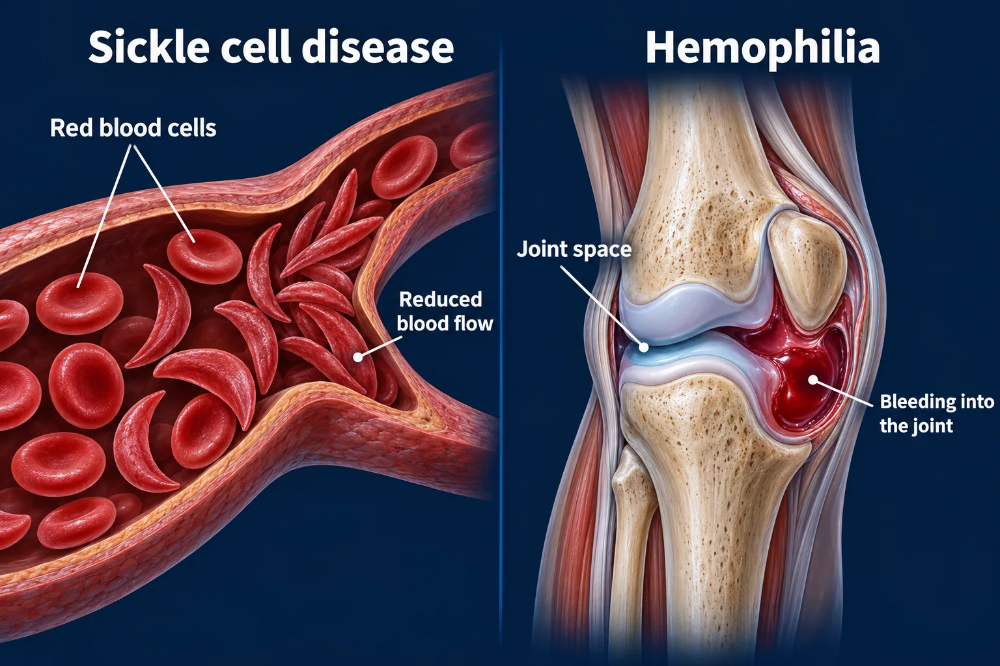

ABSN STUDY HUB · VISUAL STUDY CARD
Sickle cell disease and hemophilia

Course labels and notes from the original graphic, arranged into readable sections. The illustration is schematic.
Course overview
- ONE CLOGS THE VESSEL. THE OTHER CANNOT FORM A CLOT.
- Both inherited, and each has one intervention that matters more than the rest.
🩸 SICKLE CELL — THE CELLS JAM
In the blood vessel
- normal red cells: flows freely
- sickled red cells: jammed — the tissue beyond starves
TRIGGER → SO THE TREATMENT IS
- hypoxia — altitude, infection → oxygen
- dehydration → hydration, aggressively
- cold — it vasoconstricts → WARMTH, never cold
- stress, infection, acidosis → treat the cause; analgesia
💡 Everything that triggers a crisis takes away oxygen or water. The treatment is simply that list, read backwards.
🧬 HEMOPHILIA — THE CLOT NEVER SETS
How a clot normally forms
- injury → platelet plug → FACTOR VIII → stable clot
- In hemophilia, factor VIII is missing — so it never gets past this point (no stable clot).
The classic problem
- HEMARTHROSIS — blood inside the joint. Far too painful to move.
- Care: Elevate · factor replacement · no range of motion · ice for comfort. NEVER aspirin or NSAIDs.
Genetics and labs
- X-linked recessive: mothers carry it, sons have it.
- aPTT is prolonged; the platelet count is normal.
⭐ WHAT GETS ASKED
- Sickle cell is autosomal recessive: two genes is the disease, one gene is the trait and usually silent.
- Symptoms do not start before about 6 months, because fetal hemoglobin protects them until then.
- Infection is the leading cause of death in young children — penicillin prophylaxis and every vaccine.
- NEVER cold to a sickle crisis: cold vasoconstricts and worsens the sickling. Warm compresses only.
- NEVER aspirin in either: it promotes acidosis in sickle cell, and it blocks platelets in hemophilia.
- Pain in sickle cell is chronically under-treated. Opioids are appropriate, and asking for them is not drug-seeking.